诺基亚808手机图片选（一）
Nokia 808 pureview images
诺基亚808这个奇葩手机我天天揣在口袋里，没事就摸出来掐两下快门，几个月来拍了三千多张，现选一些向大家汇报。
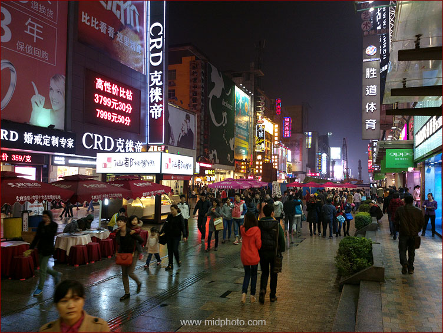
时间：2012年11月9日。地点：长沙黄兴南路步行街。手持拍摄夜景。
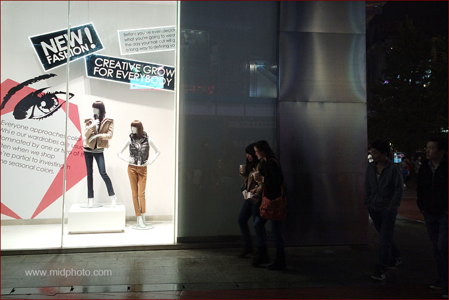
时间：2012年11月9日。地点：长沙黄兴南路步行街。
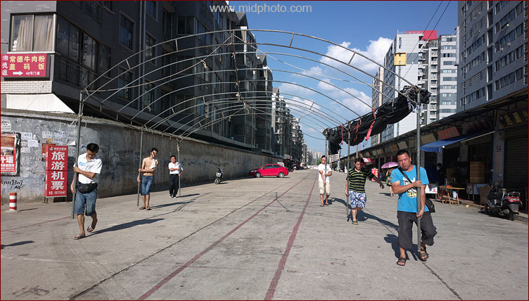
抬。时间：2013年7月24日。地点：长沙黄鹤小区。
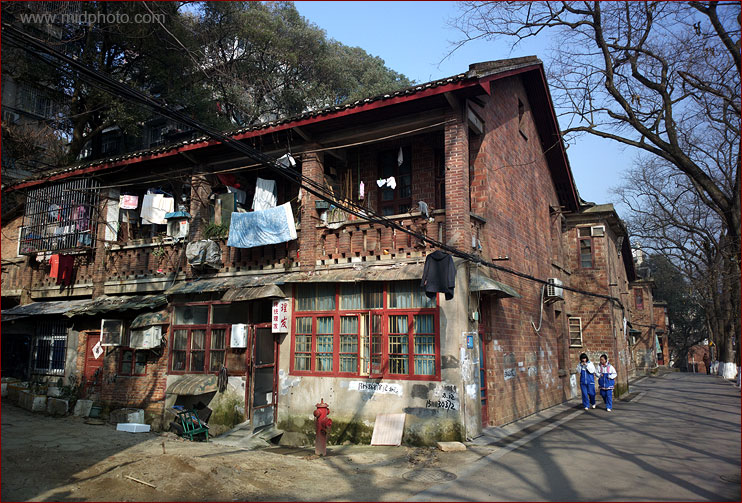
时间：2013年1月27日。地点：湖南大学艳山村。这些红砖小楼应该有50年以上的历史，以前是大学
显贵们的住处，后来大佬们搬进了新公寓，校工们住了进来。这些房子在上个世纪末房改时规定不得售给个人，校工和他们的子女只有居住权
，所以没有谁去认真打理，显得很破旧。这个理发店是我和爸爸每个月都要来的。这些岳麓山下的红砖房可算是小型联排别墅群，鄙人觉得乃是长沙最好的住处，没有之一。
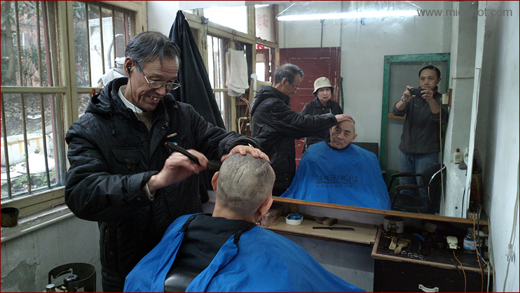
时间：2013年4月24日。地点：湖南大学艳山村家庭理发店。只要十元。刀锋在耳廓和眉心之间游走，爽。
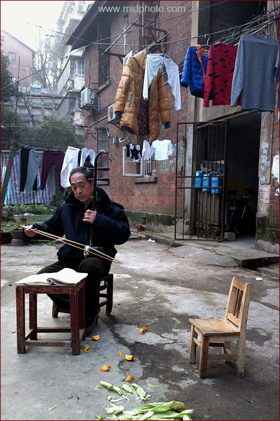
拉二胡的人。浓重的生活气息
扑面而来，这是我最喜欢的一张照片。大叔每天都在屋外练琴。我隐约记得小时候见过他，那时候他还是个小青年。现在我自己也是大叔了。时间：2013年1月25日。地点：湖大艳山村。
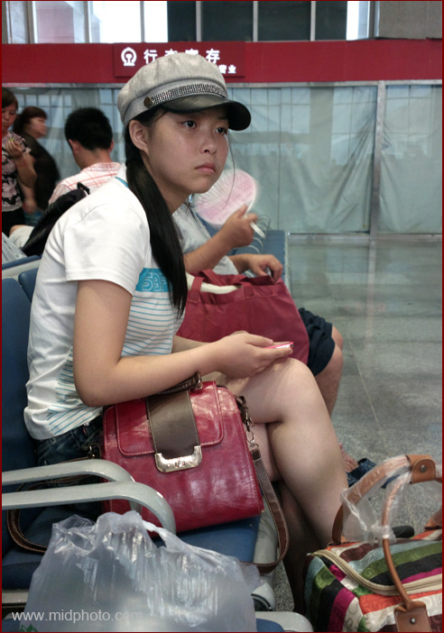
候车室的女孩。迷一样的眼神。时间：2013年7月27日。地点：湖北恩施。
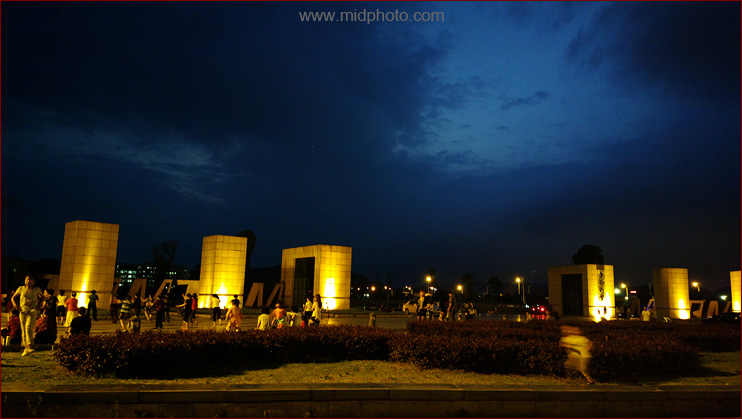
时间：2013年5月26日。地点：中南大学。
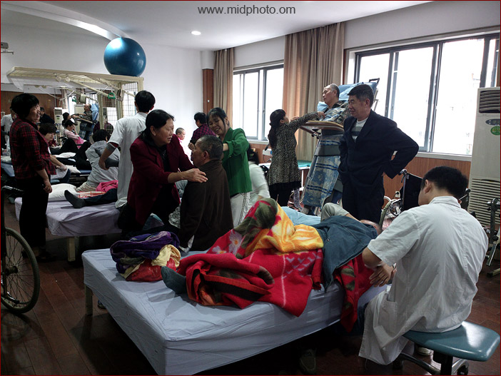
康复。时间：2013年1月25日。地点：长沙市第四医院。
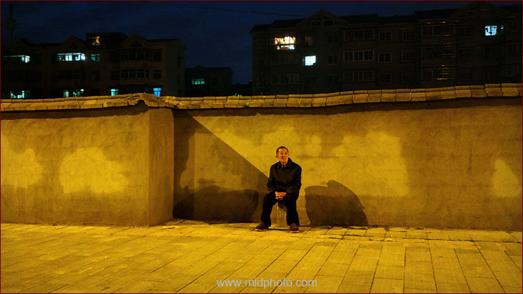
时间：2013年5月9日。地点：长沙黄鹤小区。
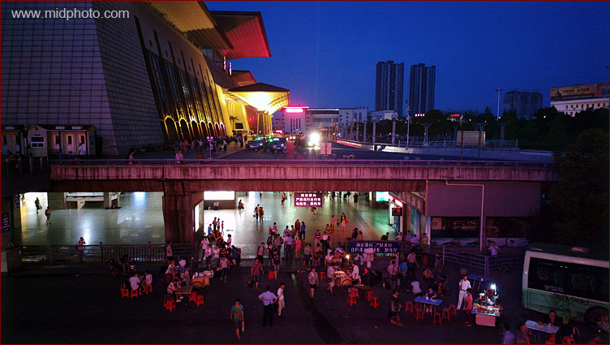
时间：2013年7月28日。地点：武昌火车站。
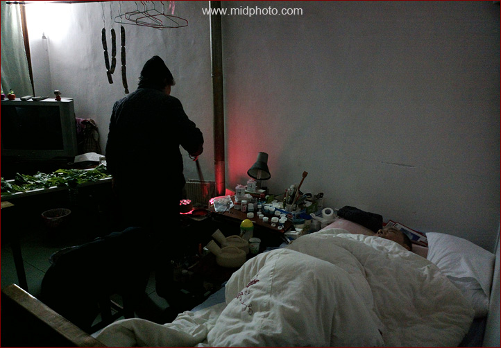
我的父亲母亲。春节的灌香肠以及腌酸菜都是妈妈做的。我爸爸已经半瘫痪十年了。妈妈辛苦了。
时间：2013年2月11日。地点：我家。
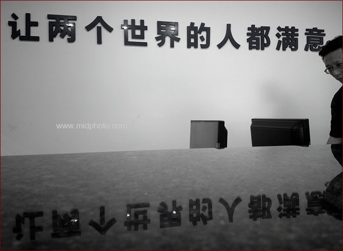
两个世界。时间：2013年6月20日。地点：长沙市阳明山殡仪馆。

五金店。时间：2013年2月2日。地点：南漳县。
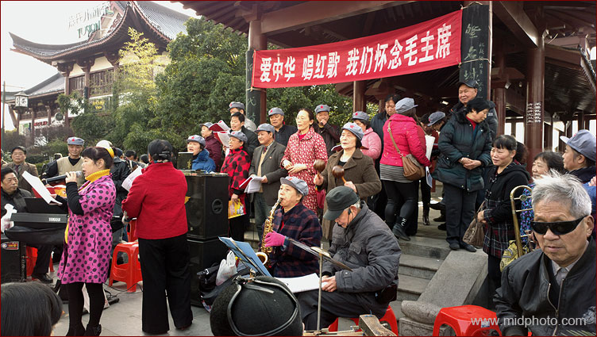
时间：2013年2月2日。地点：长沙杜甫江阁。唱红歌怀念毛主席。毛主席在世的时候，老百姓的生活质量很差，大米、食用油、肉类甚至豆腐都要凭票供应，这些老人是想回到一切凭票供应的日子吗？如果只是怀念自己的青春，那最好还是别用此类标语误导路人。
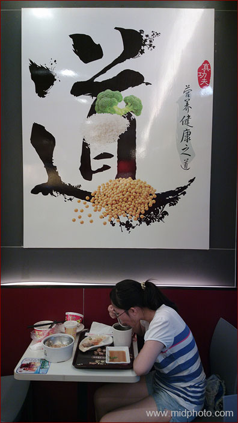
道
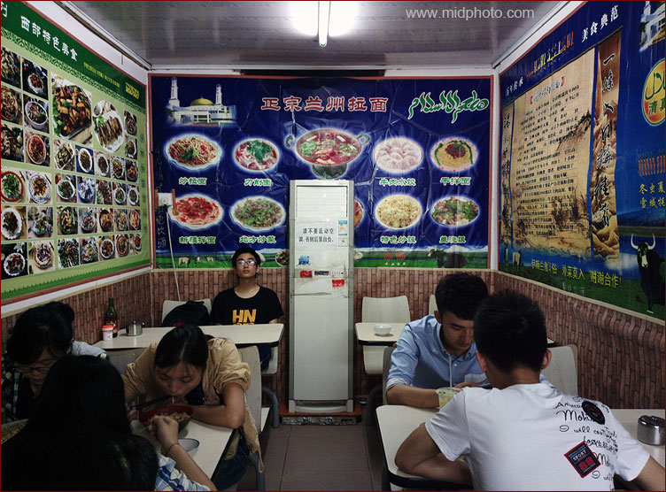
兰州拉面。时间：2013年月31日。地点：
湖南师范大学。
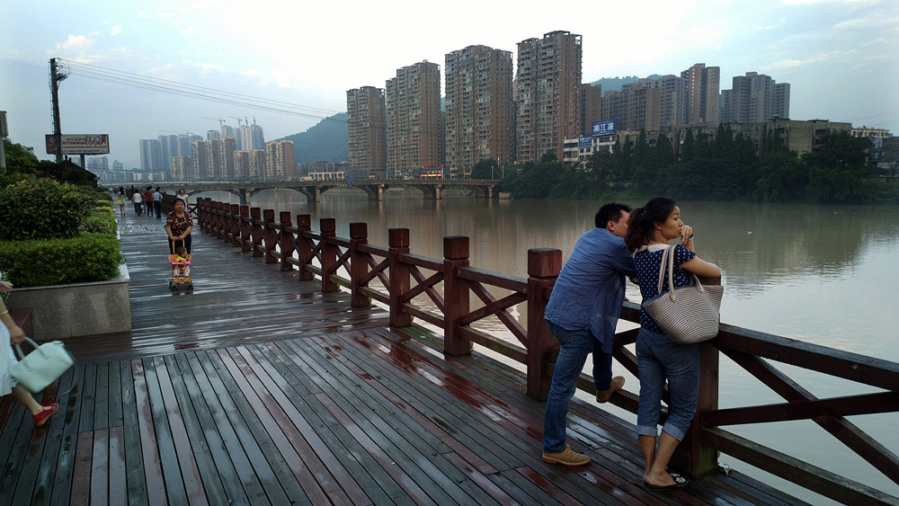
时间：2013年6月29日。地点：浏阳河。
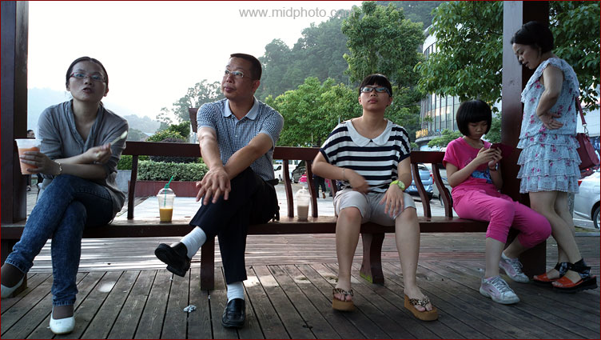
时间：2013年6月29日。地点：浏阳河。
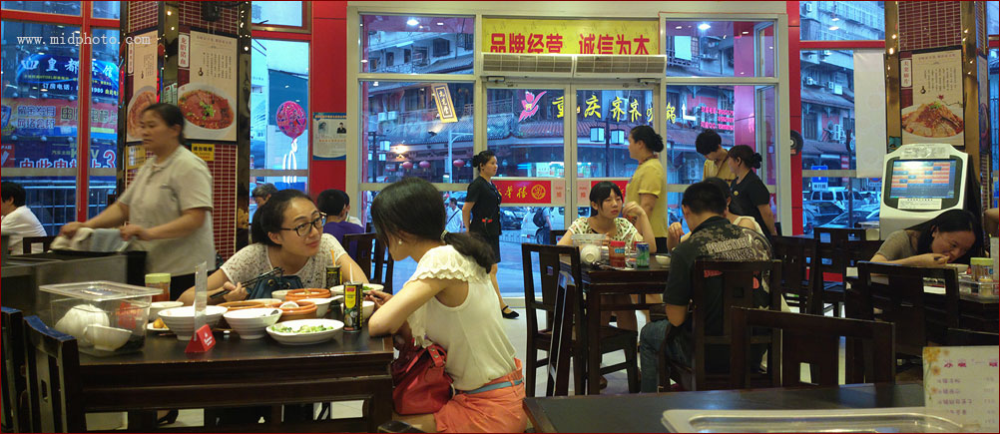
有点像电影场景。时间：2013年7月7日。地点：长沙新华楼面馆。
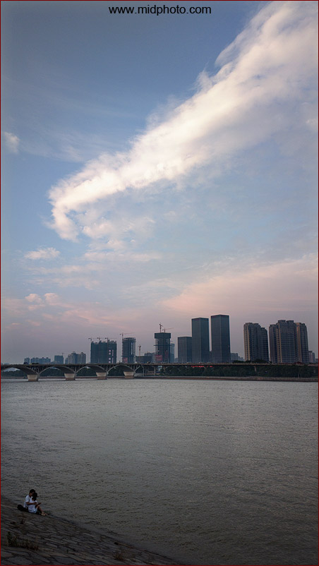
湘江
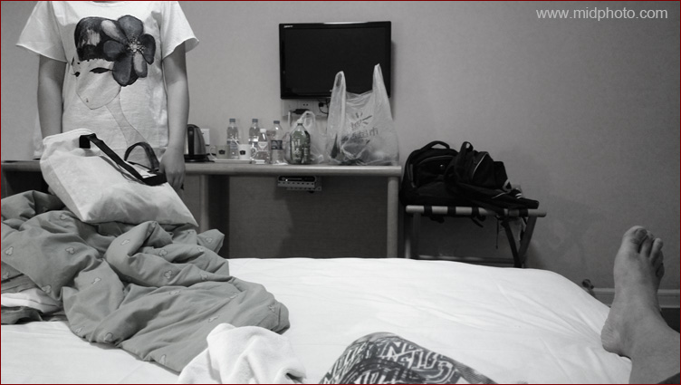
房间
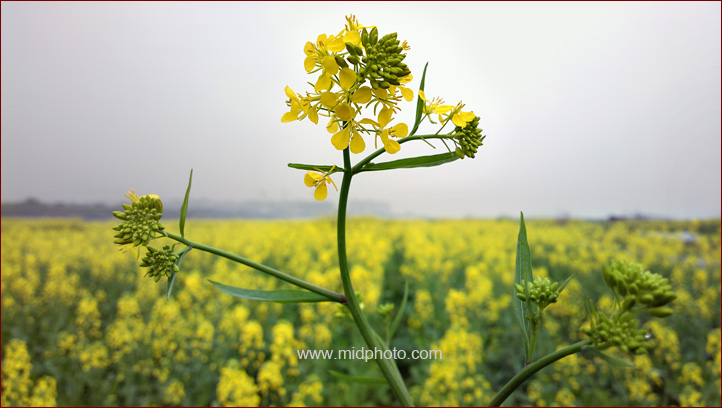
湘江边的油菜花
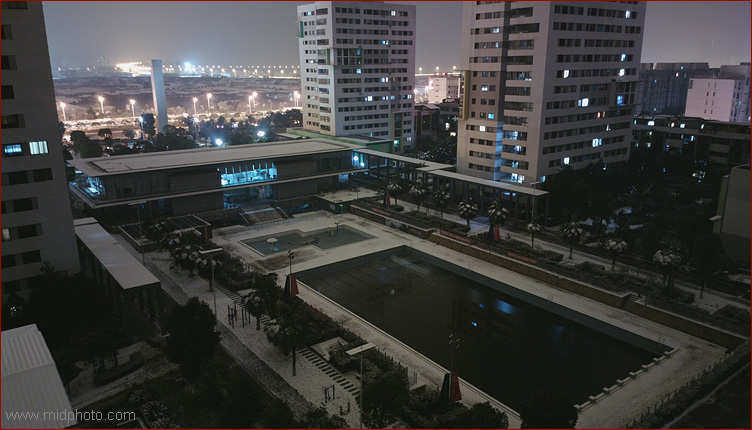
阳光一百小区，原片无调整。快门速度2.7秒，ISO200，三脚架。也许你要问为啥上脚架了还不用ISO100，夜景应该使用最低感光度来保证图片质量不是？问题就在于808的最长曝光时间只有2.7秒，我只得提高ISO到200。要是有B门该多好！

南漳的桥
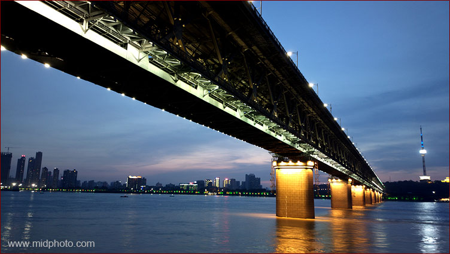
武汉长江大桥。时间：2013年7月28日。
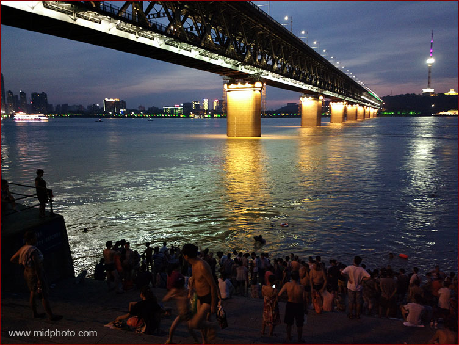
时间：2013年7月28日。1957年通车的武汉长江大桥，铁路公路两用桥，我多次在桥上走过。京广线可能是本星球最繁忙的铁路，几分钟就过一趟车。个人觉得在长江里游泳很需要勇气，这可是全世界最大的污水沟。

回家。时间：2013年2月3日。地点：湖北襄阳。
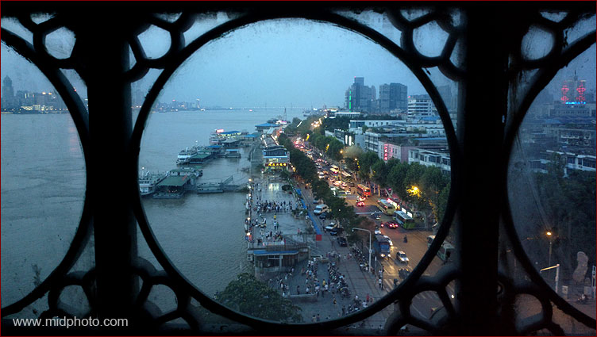
民国味道的窗户。时间：2013年7月28日。地点：武汉长江大桥。
201